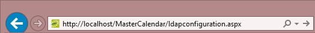
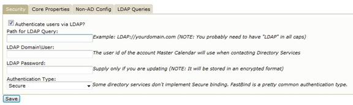
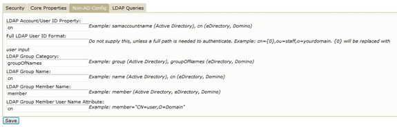
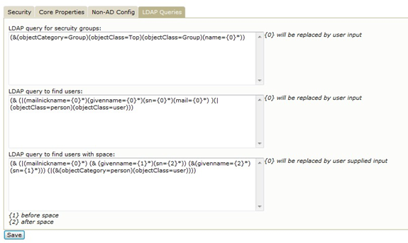

Integrated Authentication for Master Calendar
 | Concept: Integrated Authentication is Optional Functionality The Integrated Authentication module (which includes Integrated Windows Authentication, Portal Authentication and LDAP Integration) is a separately licensed component for the EMS Master Calendar system. You must be licensed for Master Calendar and Integrated Authentication in order to configure and use this module. |
Portal Authentication
The Master Calendar system can, with proper licensing, be configured so that users are automatically signed on when they access your network. This process is sometimes referred to as “single sign-on” since users have already signed on to the network through some other means, usually on a portal such as SiteMinder. Using one of several methods, Master Calendar can compare a unique variable captured by your portal/sign-on page (email address, employee ID, network credential, etc.) to a value that has been stored for the user in your database. If the credentials match, the system automatically logs the user into the Master Calendar application.
Configuration Steps
In order to configure portal authentication you must perform the following steps:
- Confirm or install new license
- Select portal authentication method
- Verify portal redirect
These steps are described in detail below.
Confirm or Install New License
In order to use Portal Authentication, your organization must be properly licensed. If you are unsure about whether you have purchased the Integrated Authentication module that enables Portal Authentication, log in to Master Calendar, go to the systemcheck.aspx page (as described under Compatible Systems), click the License Information heading and review the Licensed For list.
If you were not previously licensed for Integrated Authentication but are now, update your registration information by logging in to the Master Calendar, going to Admin – Registration, entering the new information and clicking Save License Data.
After you have entered the registration information, you must have Master Calendar re-read it by going to the systemcheck.aspx page, clicking the License Information heading and then clicking Read License.
Select Portal Authentication Method
To select the portal authentication method to be used, log in to Master Calendar and go to Admin – Default Settings. Select the appropriate entry from the Portal Authentication Method drop-down list. Since almost every “single sign-on” environment and strategy is different, we have provided you with five commonlysupported methods of authentication: server variable, session, form, cookie and query string. The first two methods are the most widely used.
Server Variable Method (Header Variable)
Server Variable/Header Variable is a collection of variables that are set by the Internet Information Server (IIS). Applications like SiteMinder create custom server variables for portal site use.
Code example:
Set the Portal Authentication Method field to Server Variable and type the appropriate entry in the Portal Authentication Variable field. Then redirect users to the Default.aspx page (or to any page in the system for Master Calendar) and the server variable will be read.
Session Method
A session is a way to provide/maintain user state information in an inherently stateless environment. It provides access to a session-wide cache you can use to store information.
In order to use the session method, set the Portal Authentication Method field to Session and type the appropriate variable in the Portal Authentication Variable field. Then you must create an asp.net web page and name it with the .aspx extension similar to the example below. The asp.net web page created must be copied into the Master Calendar root web directory. It must be put there in order for Master Calendar to read the session variable
You will need to pass the user’s email address or external reference through to your asp.net web page.
Code example in vb.net:
<%@ Import Namespace="System" %>
<script runat="server" language="vb">
Sub Page_Load(ByVal sender As System.Object, ByVal e As System.EventArgs)
Session.Item("MCSession") = "test@dea.com"
Response.Redirect("Default.aspx")
End Sub </script>
Form Method
Forms enable client-side users to submit data to a server in a standardized format via HTML. The creator of a form designs the form to collect the required data using a variety of controls, such as INPUT or SELECT. Users viewing the form fill in the data and then click Submit to send the data to the server.
To use the form method, set the Portal Authentication Method field to Form and type the appropriate variable in the Portal Authentication Variable field. To create portals through a form, create a web page with a form similar to below. Once the user logs on through the portal, the form below can be submitted to log the user on to the application.
Code example in HTML:
<Form name="form1" method="Post" action="http://localhost/virtualdirectory/Default.aspx">
<input type="hidden" id="MCFORM" name="MCFORM" value="test@dea.com"> <input type="submit" value="submit">
</form>
Cookie Method
A cookie is a small piece of information stored by the browser. Each cookie is stored in a name/value pair called a crumb—that is, if the cookie name is "id" and you want to save the ID's value as "this", the cookie would be saved as id=this.
You can store up to 20 name/value pairs in a cookie, and the cookie is always returned as a string of all the cookies that apply to the page. This means that you must parse the string returned to find the values of individual cookies. Cookies accumulate each time the property is set. If you try to set more than one cookie with a single call to the property, only the first cookie in the list will be retained.
To use the cookie method, set the Portal Authentication Method field to Cookie and type the appropriate variable in the Portal Authentication Cookie Key field. Then create a web page with code similar to below. Once the user logs on through the portal, take their user logon information and create a cookie. After the cookie is created, send the user to the Default.aspx page of the application.
Code example in Active Server Pages 2.0:
<%@LANGUAGE="VBSCRIPT" %>
<%
Response.Expires = -1
Response.Cookies("MCCookie")("CookVal") = "test@dea.com"
Response.Cookies("MCCookie").Path = "/"
Response.Cookies("MCCookie").Expires = DateAdd("m", 3, Now)
Response.Redirect("http://localhost/virtualdirectory/Default.aspx") %>
Query String Method
A query string is information appended to the end of a page's URL. An example using portal authentication is below
Code example:
http://localhost/virtualdirectory/Default.aspx?MCQS=test@dea.com
To use the query string method, set the Portal Authentication Method field to Query String and type the appropriate variable in the Portal Authentication Variable field.
Verify Portal Redirect
The portal authentication entry page is the page within Master Calendar that processes the portal request. The name of the page is Default.aspx and it is the page where all portal authentication requests should be sent. This page is already installed and included with your Master Calendar software. The location will be the same folder as the EMS product’s root web folder. For example, http://localhost/virtualdirectory/Default.aspx
Integrated Windows Authentication
Integrated Windows Authentication is another form of “single sign-on” available as an option with Master Calendar systems.
Configuration Steps
In order to configure Integrated Windows Authentication for Master Calendar, you must perform the following steps after installing and configuring Master Calendar:
- Confirm or install new license
- Add domain/user account information to user records
- Configure IIS for authenticated access
These steps are described in detail below.
Confirm or Install New License
In order to use Integrated Windows Authentication, your organization must be properly licensed. If you are unsure about whether you have purchased the Integrated Authentication module that enables Integrated Windows Authentication, log in to Master Calendar, go to the systemcheck.aspx page (as described under Compatible Systems), click the License Information heading and review the Licensed For list and look for a description to state “Integrated Authentication”.
If you were not previously licensed for Integrated Authentication but are now, update your registration information by logging in to the Master Calendar, going to Admin > Site Administration > Registration, entering the new licenses information then click Save License Data. The license information is case-sensitive and needs to be entered in exactly how it was provided from EMS Software If the information that was provided is incorrect, please contact EMS Software After you have entered the registration information, you must have Master Calendar re-read it by going to the systemcheck.aspx page, clicking the License Information heading and then clicking Read License. At the very top of the page, it should state “License read successfully”.
Configure Master Calendar to Call Your LDAP Server
- Log in to Master Calendar as the site system administrator and click on the Admin menu item. Manually type “LDAPConfiguration.aspx” to the URL in the address bar to access the LDAP Configuration page.

- Configure your LDAP Settings.
 | Note: Master Calendar only utilizes read-only queries to the organizations directory services. The Domain\User account does not need to have any special privileges. All that is required is that it be an active account in your directory services. Be aware, in some environments, passwords expire at scheduled intervals. If the password in LDAP settings is not updated when this occurs, Master Calendar/LDAP connectivity will be lost until the new password has been re-entered. It is recommended to consider using a generic account and a password that does not expire. |
Core Properties

Non-AD Configuration

LDAP Queries

Add LDAP Security Groups to Master Calendar
In the course of setting up LDAP integration within the Master Calendar system, you pair security “templates” defined with security groups from your network. In order to make groups available for this pairing, you must “add” them to the Master Calendar. To do so, perform the following steps (which are also covered in the Master Calendar Setup Guide):
- Log in to the Master Calendar site as the system administrator and select Admin >– Security > User Templates.
- Click Assign LDAP Groups, and then click Add.
- Use the Search By field to search all LDAP groups or filter by Global Group or Universal Groups. Use the Grouping text box to search a particular string of characters from the list.
- From the list of LDAP Groups, feel free to use Microsoft Windows multi-select function to highlight group(s). All the LDAP Groups that are highlighted from the list will be added to Master Calendar once Add is selected on the bottom of the Security Group Lookup screen.
- If a user is in multiple groups, that user's Master Calendar permissions are based on the template associated with the highest priority group that is assigned. Highlight one or more of the security groups that are listed and use the Move Up ++ / Move Down buttons to order the groups in a top–down order.
- Click Save to save the Security Groups order.
Page tags: article:topic